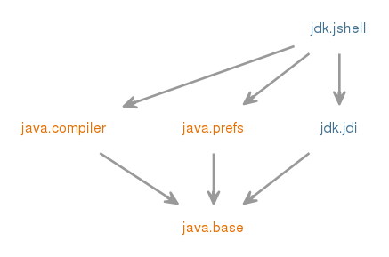

Module jdk.jshell
该模块提供对Java编程语言“片段”评估工具的支持，如读取评估打印循环（REPL），包括jshell工具。
单独的软件包支持构建工具，配置工具的执行，并以编程方式启动现有的Java Shell工具。
jdk.jshell是用于创建“代码段”评估工具的软件包。 通常，这只是创建工具所需的软件包。
jdk.jshell.spi包指定了基于jdk.jshell API的工具定义执行引擎实现的服务提供程序接口（SPI）。 jdk.jshell.execution包提供了jdk.jshell.spi接口和支持代码的标准实现。 它还用作定义新的执行引擎实现的功能库。
jdk.jshell.tool软件包支持以编程方式启动jshell工具。
jdk.jshell.execution包包含jdk.jshell.spi中的接口的实现 。 否则，这四个软件包是独立的，操作在不同的级别，不共享功能或定义。
- 工具指南：
- jshell
- Module Graph:
- 
- 从以下版本开始：
- 9
{kind=link}
-
-
Packages
Exports 软件包 描述 jdk.jshell 提供用于创建工具的界面，例如阅读评估打印循环（REPL），它交互地评估Java编程语言代码的“片断”。jdk.jshell.execution 提供构建JShell执行引擎的实现支持。jdk.jshell.spi 定义可插拔JShell执行引擎的服务提供程序接口。jdk.jshell.tool 提供一种启动Javaâ壳工具实例的机制。
-
Modules
Requires Modifier Module 描述 transitive java.compiler 定义语言模型，注释处理和Java编译器API。transitive java.prefs 定义首选项API。transitive jdk.jdi 定义Java调试接口。
-
Services
Provides Type 描述 ExecutionControlProvider JShell使用的提供程序来生成评估代码段所需的执行引擎。Tool 可以从程序调用的工具的通用界面。Uses Type 描述 ExecutionControlProvider JShell使用的提供程序来生成评估代码段所需的执行引擎。
-